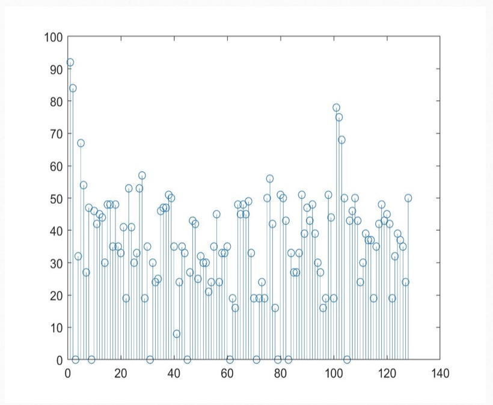
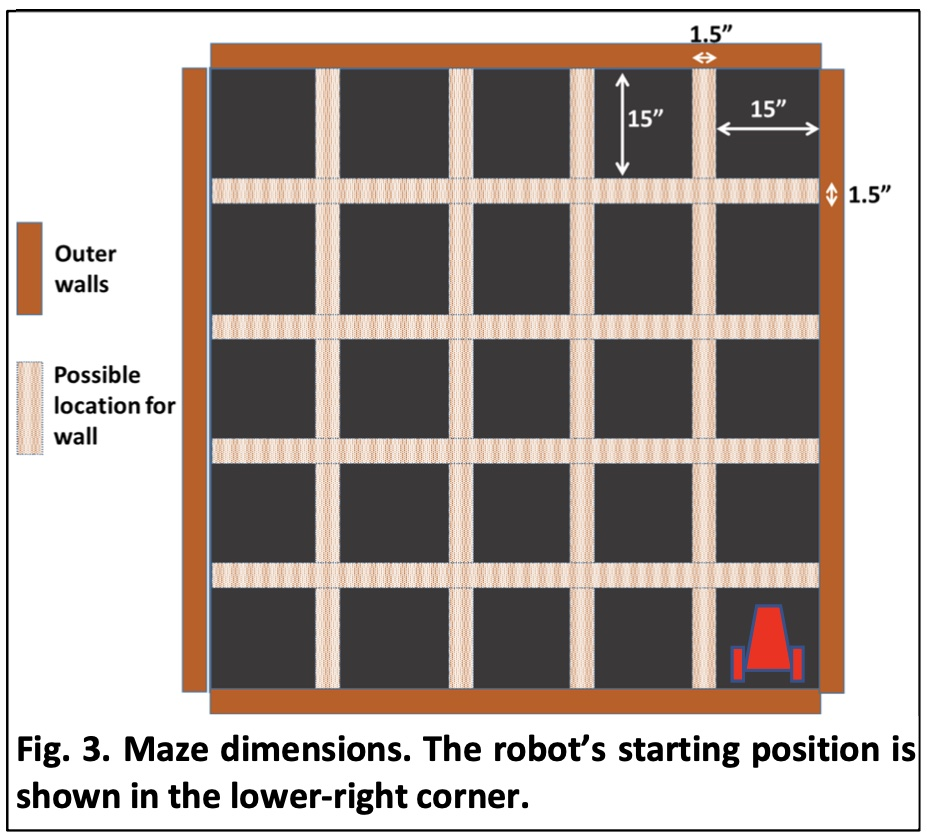

Objectives:
- Work on the RF communication between the robot and the base station.
- Re‐code blocking statements.
- Replace any instance of analogRead() with direct coding of the ADC.
- Finalize our onboard FFT.
- Install an override start button.
- Implement a snavigation algorithm that our robot will use to navigate the maze in the Final Demo.
- Implement PID control.
- Ensure that our base station can receive the signal from the robot and display the frequency.
- Revisit and ensure that the ultrasonic sensors, phototransistors and microphone circuits operate and provide necessary input to our robot.
Materials:
- Robot
- 2 x RF PCB adapters
- Jumper wires
- 1 x LM358 op‐amp
- 1 x 9V battery and snap connector
- Small breadboard with blinking IR LED setup
- Two 4‐pin,and two 3‐pin, each snapped off from row of headers
- Two 8‐pin header receptacles
- Two PCB adapters
- Two RF transceivers
- Two USB cable
- Pushbutton & resistor
Procedure:
1. Soldering the PCB RF Adapters
Professor Carl designed PCB adapters that we used to interface the RF transceivers and the breadboards, as the figure shown below. We soldered headers onto the PCB adapters


After successfully soldering two PCB adapters, we connected it with pins D9‐D12 of the Nano on breadboard, then connected the MISO (D12) and MOSI (D11) pins to the transceiver, as well as pins D9 and D10 which will be used for CS and CE.
For the remained three pins on the adapter, we connected the Ground pin of the adapter to the common Ground on our breadboard, connected the +3.3V pin of the adapter to the +3.3V pin on the Nano, and connected the SCK pin of the adapter to the SCK pin on the Nano.

For the coding part, we changed the pipes in both files so that each student group has their own pipes, thus avoiding disturbance from signals produced by other group's transmitters when we turned on our RF transceiver.
2. Non‐Blocking Coding
To avoid any blockings in our code, I used millis() to replace the previous delay() functions. Also, we didn't use for loops is our code.
3. Replace analogRead()
We used hard‐coding of the ADC on the Nano to replace analogRead().
4. FFT & Override Button
For the FFT part, we reused code in lab3 with minor changes so that when the microphone picks up sound with frequency about 950Hz (which is the signal for our car to begin navigation), it will enter the state of moving. We implemented this by checking the spectrum obtained with a sound frequency of 950 Hz and therefore determine the threshold of bin values for distinguishing between 950Hz and non-950Hz.
Here's an example FFT spectrum for sound with 950Hz:
For the override button, the purpose for it is if the robot does not start to move by the end of the melody, we can press this button to signify to our robot to start navigating.
To implement this function, we simply built a small circuit on our breadboard and used a bool variable to determine whether it's time to start moving.
5. Navigation
We applied Right Wall Following Algorithm to enable our robot navigate intelligently in maze. We used switch case to implement this: the default case is going forward, unless the condition for turning-left 90 degrees, turning-right 90 degrees, or turn-round 180 degrees are met, which will cause it jump to the corresponding case when goes into the main loop of our code next time.
Here's the setup for the maze:
Also, we applied millis() in cases for turning, so when our car finished turning with preset speed and the preset amount of time has passed, it will go back to the default case when entering main loop next time.
6. PID Control
In order to make our car self-adjustable, we implemented PID control when it's going forward. We spent a lot of time on adjusting parameters and finally decided to use only PD control by comparing the actual distance to the right wall with the expected distance, and adjusting speed of servos accordingly.
7. Frequency Measurement & Display
In order to find two different treasures(LED with certain frequency) in maze and display the frequency on our base station, we reused code in lab2 about phototransistors & display. We calculated frequency received by phototransistors while navigating and took the median value of every 25 frequencies we received to make it more accurate. Once the second treasure was found and the frequency of treasure was displayed, the robot should stop and begin blinking.
8. Final Demo
Here's the video for part of our final demo, as well as pictures of our robot and base station!